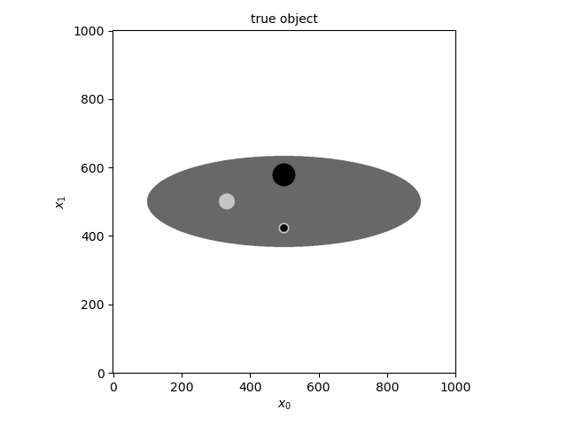
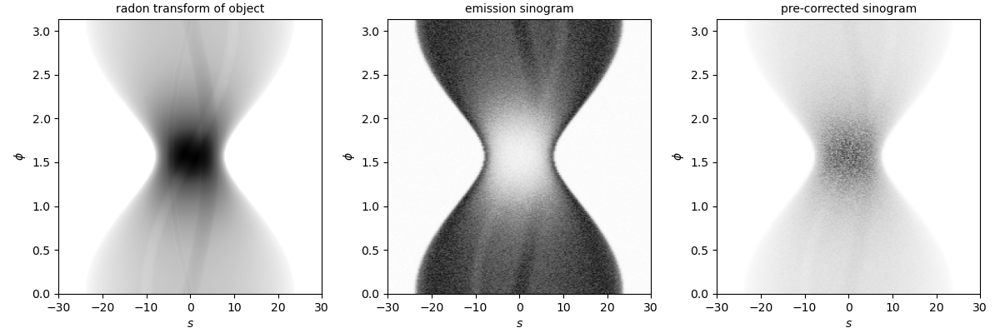
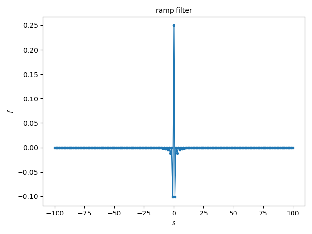
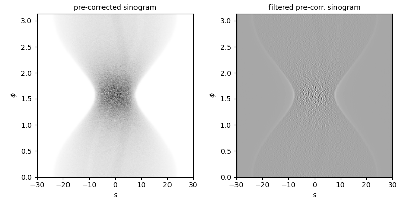
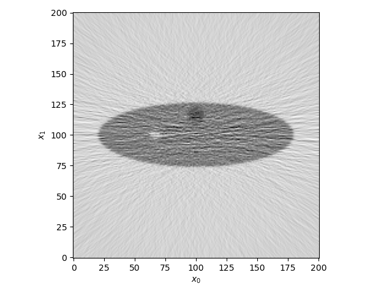
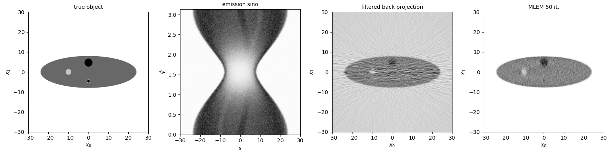
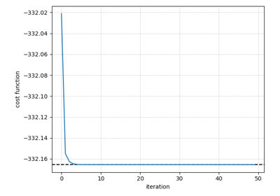

Note
Go to the end to download the full example code.
2D non-TOF filtered back projection (FBP) of Poisson data
This example demonstrates the run 2D filtered back projection (FBP) on pre-corrected Poisson emission data.
Tip
parallelproj is python array API compatible meaning it supports different
array backends (e.g. numpy, cupy, torch, …) and devices (CPU or GPU).
Choose your preferred array API xp and device dev below.
18 from __future__ import annotations
19
20 import array_api_compat.numpy as xp
21
22 # import array_api_compat.cupy as xp
23 # import array_api_compat.torch as xp
24
25 import parallelproj
26 from array_api_compat import to_device
27 import array_api_compat.numpy as np
28 import matplotlib.pyplot as plt
29 from scipy.ndimage import gaussian_filter
30 from utils import RadonDisk, RadonObjectSequence
31
32 # choose a device (CPU or CUDA GPU)
33 if "numpy" in xp.__name__:
34 # using numpy, device must be cpu
35 dev = "cpu"
36 elif "cupy" in xp.__name__:
37 # using cupy, only cuda devices are possible
38 dev = xp.cuda.Device(0)
39 elif "torch" in xp.__name__:
40 # using torch valid choices are 'cpu' or 'cuda'
41 if parallelproj.cuda_present:
42 dev = "cuda"
43 else:
44 dev = "cpu"
Input parameters
51 # add Poisson noise to the sinogram
52 add_noise = True
53 # total "prompt" counts of the emission sinogram
54 total_counts = 1e7
55 # sigma of the Gaussian filter to smooth sinogram in radial
56 # direction to simulate limited resolution
57 sino_res = 1.0
58 # linear attenuation coefficient of phantom in 1/cm
59 mu = 0.1
60 # number of MLEM iterations to run
61 num_iter = 50
62 # maximum angle of the sinogram in radians
63 phi_max = xp.pi
64 # undersampling factor of the sinogram in the angular direction
65 phi_undersampling_factor = 1
Setup of arrays
71 num_rad = 201
72 num_phi = int(0.5 * num_rad * xp.pi * (phi_max / xp.pi)) + 1
73 num_phi = num_phi // phi_undersampling_factor
74
75 r = xp.linspace(-30, 30, num_rad, device=dev, dtype=xp.float32)
76 phi = xp.linspace(0, phi_max, num_phi, endpoint=False, device=dev, dtype=xp.float32)
77 R, PHI = xp.meshgrid(r, phi, indexing="ij")
78 X0, X1 = xp.meshgrid(r, r, indexing="ij")
79 x = xp.linspace(float(xp.min(r)), float(xp.max(r)), 1001, device=dev, dtype=xp.float32)
80 X0hr, X1hr = xp.meshgrid(x, x, indexing="ij")
81
82 print(f"num rad: {num_rad}")
83 print(f"phi max: {180*phi_max/xp.pi:.2f} deg")
84 print(f"delta phi: {180*float(phi[1]-phi[0])/xp.pi:.2f} deg")
num rad: 201
phi max: 180.00 deg
delta phi: 0.57 deg
Define an object with known Radon transform
We setup a combination of (scaled) disks as a simple phantom.
93 disk0 = RadonDisk(xp, dev, 8.0)
94 disk0.amplitude = 1.0
95 disk0.s0 = 3.0
96
97 disk1 = RadonDisk(xp, dev, 2.0)
98 disk1.amplitude = 0.5
99 disk1.x1_offset = 4.67
100
101 disk2 = RadonDisk(xp, dev, 1.4)
102 disk2.amplitude = -0.5
103 disk2.x0_offset = -10.0
104
105 disk3 = RadonDisk(xp, dev, 0.93)
106 disk3.amplitude = -0.5
107 disk3.x1_offset = -4.67
108
109 disk4 = RadonDisk(xp, dev, 0.67)
110 disk4.amplitude = 1.0
111 disk4.x1_offset = -4.67
112
113 radon_object = RadonObjectSequence([disk0, disk1, disk2, disk3, disk4])
114
115 fig, ax = plt.subplots(tight_layout=True)
116 ax.imshow(
117 parallelproj.to_numpy_array(radon_object.values(X0hr, X1hr).T),
118 cmap="Greys",
119 origin="lower",
120 )
121 ax.set_xlabel(r"$x_0$")
122 ax.set_ylabel(r"$x_1$")
123 ax.set_title("true object", fontsize="medium")
124 fig.show()

Calculate the radon transform of the object
130 rt_transform = radon_object.radon_transform(R, PHI)
Simulate the effect of attenuation and Poisson noise
136 sens_sino = xp.exp(-mu * disk0.radon_transform(R, PHI))
137 contam = xp.full(
138 rt_transform.shape, 0.1 * xp.mean(sens_sino * rt_transform), device=dev
139 )
140
141 emis_sino = sens_sino * rt_transform
142
143 if sino_res > 0:
144 for i in range(num_phi):
145 emis_sino[:, i] = xp.asarray(
146 gaussian_filter(
147 parallelproj.to_numpy_array(emis_sino[:, i]),
148 sino_res,
149 ),
150 device=dev,
151 )
152
153 emis_sino = emis_sino + contam
154
155 count_fac = total_counts / float(xp.sum(emis_sino))
156
157 emis_sino *= count_fac
158 contam *= count_fac
159
160 if add_noise:
161 emis_sino = xp.asarray(
162 np.random.poisson(parallelproj.to_numpy_array(emis_sino)).astype(np.float32),
163 device=dev,
164 )
165
166 # pre-correct sinogram - needed to run FBP
167 pre_corrected_sino = (emis_sino - contam) / sens_sino
170 ext_sino = [float(xp.min(r)), float(xp.max(r)), float(xp.min(phi)), float(xp.max(phi))]
171
172 fig, ax = plt.subplots(1, 3, figsize=(12, 4), tight_layout=True)
173 ax[0].imshow(
174 parallelproj.to_numpy_array(rt_transform.T),
175 cmap="Greys",
176 aspect=20,
177 extent=ext_sino,
178 origin="lower",
179 )
180 ax[1].imshow(
181 parallelproj.to_numpy_array(emis_sino.T),
182 cmap="Greys",
183 aspect=20,
184 extent=ext_sino,
185 origin="lower",
186 )
187 ax[2].imshow(
188 parallelproj.to_numpy_array(pre_corrected_sino.T),
189 cmap="Greys",
190 aspect=20,
191 extent=ext_sino,
192 origin="lower",
193 )
194
195 for axx in ax.ravel():
196 axx.set_xlabel(r"$s$")
197 axx.set_ylabel(r"$\phi$")
198
199 ax[0].set_title("radon transform of object", fontsize="medium")
200 ax[1].set_title("emission sinogram", fontsize="medium")
201 ax[2].set_title("pre-corrected sinogram", fontsize="medium")
202 fig.show()

Setup of the ramp filter
209 n_filter = r.shape[0]
210 r_shift = xp.arange(n_filter, device=dev, dtype=xp.float64) - n_filter // 2
211 f = xp.zeros(n_filter, device=dev, dtype=xp.float64)
212 f[r_shift != 0] = -1 / (xp.pi**2 * r_shift[r_shift != 0] ** 2)
213 f[(r_shift % 2) == 0] = 0
214 f[r_shift == 0] = 0.25
215
216 fig, ax = plt.subplots(tight_layout=True)
217 ax.plot(r_shift, f, ".-")
218 ax.set_xlabel(r"$s$")
219 ax.set_ylabel(r"$f$")
220 ax.set_title("ramp filter", fontsize="medium")
221 fig.show()

Ramp filtering of the pre-corrected emission sinogram
227 filtered_pre_corrected_sino = 1.0 * pre_corrected_sino
228
229 for i in range(num_phi):
230 filtered_pre_corrected_sino[:, i] = xp.asarray(
231 np.convolve(
232 parallelproj.to_numpy_array(filtered_pre_corrected_sino[:, i]),
233 f,
234 mode="same",
235 ),
236 device=dev,
237 )
238
239 fig, ax = plt.subplots(1, 2, figsize=(8, 4), tight_layout=True)
240 ax[0].imshow(
241 parallelproj.to_numpy_array(pre_corrected_sino.T),
242 cmap="Greys",
243 aspect=20,
244 extent=ext_sino,
245 origin="lower",
246 )
247 ax[1].imshow(
248 parallelproj.to_numpy_array(filtered_pre_corrected_sino.T),
249 cmap="Greys",
250 aspect=20,
251 extent=ext_sino,
252 origin="lower",
253 )
254 for axx in ax.ravel():
255 axx.set_xlabel(r"$s$")
256 axx.set_ylabel(r"$\phi$")
257
258 ax[0].set_title("pre-corrected sinogram", fontsize="medium")
259 ax[1].set_title("filtered pre-corr. sinogram", fontsize="medium")
260 fig.show()

Define a projector and run filtered back projection (FBP)
267 proj = parallelproj.ParallelViewProjector2D(
268 (num_rad, num_rad),
269 r,
270 -phi,
271 2 * float(xp.max(r)),
272 (float(xp.min(r)), float(xp.min(r))),
273 (float(r[1] - r[0]), float(r[1] - r[0])),
274 )
275
276 filtered_back_proj = proj.adjoint(filtered_pre_corrected_sino)
277
278 fig, ax = plt.subplots(tight_layout=True)
279 ax.imshow(
280 parallelproj.to_numpy_array(filtered_back_proj).T, cmap="Greys", origin="lower"
281 )
282 ax.set_xlabel(r"$x_0$")
283 ax.set_ylabel(r"$x_1$")
284 fig.show()

Run iterative MLEM reconstruction for comparison
291 x_mlem = xp.ones((num_rad, num_rad), device=dev, dtype=xp.float32)
292 sens_img = proj.adjoint(sens_sino)
293
294 for i in range(num_iter):
295 exp = sens_sino * proj(x_mlem) + contam
296 ratio = emis_sino / exp
297 ratio_back = proj.adjoint(sens_sino * ratio)
298
299 update_img = ratio_back / sens_img
300 x_mlem *= update_img
Visualize the results
307 ext_img = [float(xp.min(r)), float(xp.max(r)), float(xp.min(r)), float(xp.max(r))]
308
309 fig, ax = plt.subplots(1, 4, figsize=(16, 4), tight_layout=True)
310 ax[0].imshow(
311 parallelproj.to_numpy_array(radon_object.values(X0hr, X1hr).T),
312 cmap="Greys",
313 extent=ext_img,
314 origin="lower",
315 )
316 ax[1].imshow(
317 parallelproj.to_numpy_array(emis_sino.T),
318 cmap="Greys",
319 aspect=20,
320 extent=ext_sino,
321 origin="lower",
322 )
323 ax[2].imshow(
324 parallelproj.to_numpy_array(filtered_back_proj.T),
325 cmap="Greys",
326 extent=ext_img,
327 origin="lower",
328 )
329 ax[3].imshow(
330 parallelproj.to_numpy_array(x_mlem.T),
331 cmap="Greys",
332 extent=ext_img,
333 origin="lower",
334 )
335 ax[0].set_xlabel(r"$x_0$")
336 ax[0].set_ylabel(r"$x_1$")
337 ax[1].set_xlabel(r"$s$")
338 ax[1].set_ylabel(r"$\phi$")
339 ax[2].set_xlabel(r"$x_0$")
340 ax[2].set_ylabel(r"$x_1$")
341 ax[3].set_xlabel(r"$x_0$")
342 ax[3].set_ylabel(r"$x_1$")
343
344 ax[0].set_title("true object", fontsize="medium")
345 ax[1].set_title("emission sino", fontsize="medium")
346 ax[2].set_title("filtered back projection", fontsize="medium")
347 ax[3].set_title(f"MLEM {num_iter} it.", fontsize="medium")
348
349 fig.show()

Total running time of the script: (0 minutes 11.685 seconds)
Related examples

DePierro’s algorithm to optimize the Poisson logL with quadratic intensity prior
DePierro's algorithm to optimize the Poisson logL with quadratic intensity prior


Non-TOF and TOF projections using a modularized (block) PET scanner geometry
Non-TOF and TOF projections using a modularized (block) PET scanner geometry